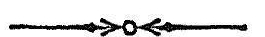
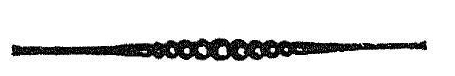

चतुस्त्रिंशमाह्निकम् ।
अथ
श्रीतन्त्रालोके

श्रीमन्महामाहेश्वराचार्याभिनवगुप्तविरचिते
श्रीजयरथकृतविवेकाख्यटीकोपेते

चतुस्त्रिंशमाह्निकम् ।

सुशिवः शिवाय भूयाद्भूयोभूयः सतां महानादः ।
यो बल्लसितोsपि स्वस्माद्रूपान्न निष्क्रान्तः ॥
ननु यदि एक एव अयं चिदात्मा परमे-
श्वरः, तत् किमाणवाद्युपायवैचित्रयेणेत्याशङ्कां
गर्भीकृत्य अत्रैव द्वारद्वारिकया प्रवेशमभिधातुं
द्वितीयार्धेन उपक्रमते
उच्यतेऽथ स्वस्वरूप-
प्रवेशः क्रमसङ्गतः ।
तमेव आह
यदेतद्बहुधा प्रोक्त-
माणवं शिवताप्तये ।